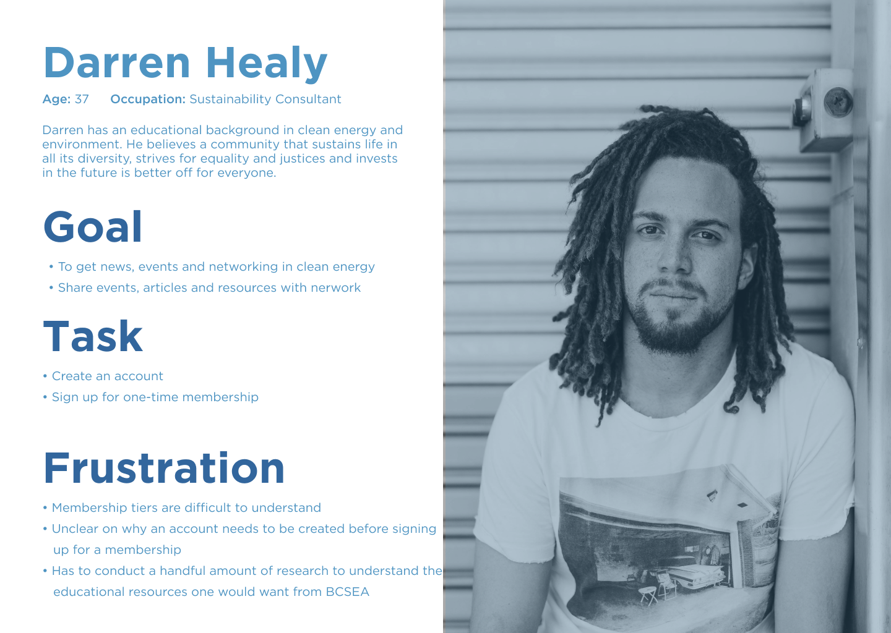
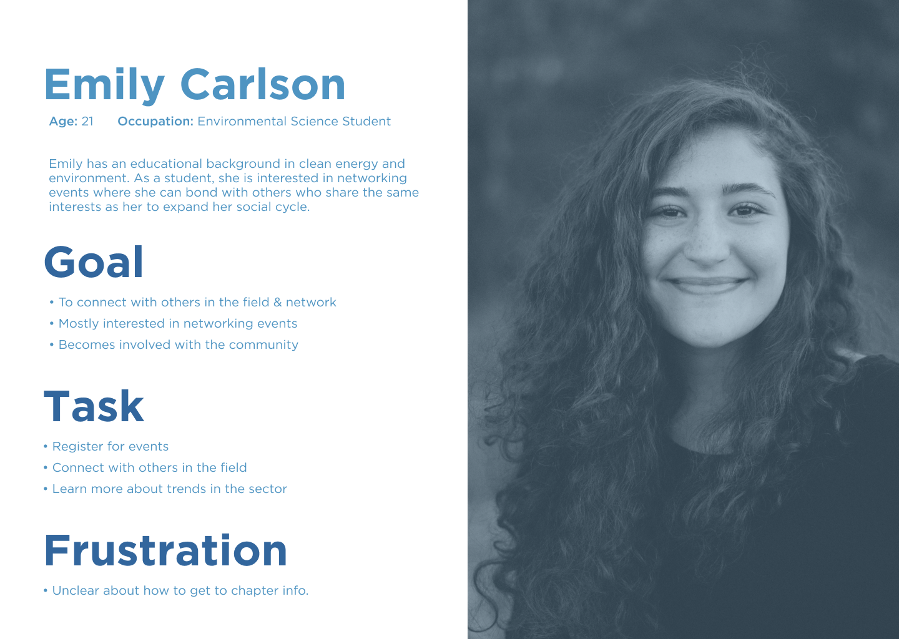

The BC Sustainable Energy Association (BCSEA) is a volunteer-based, charity that supports the
sustainable production, distribution, and consumption of energy in British Columbia and
beyond.
The association collaborates with governments, industry, universities and other institutions,
other non-governmental organizations, and citizens to put in place the conditions needed to
accelerate the
province’s transition to a lower-carbon economy.
Team
Jisoo Lee, Behfar Zamani, Christina Hoang
My roles
user research, user testing, ux design, project manager
Tools
Figma, Sketch, Miro, Slack, Google Meeting
For this study, my team and I were to evaluate BCSEA existing website in regards to the two concerns they had raised. The two goals were first, to enhance the user flow of the membership sign up process, and second, evaluate weaknesses in the website’s sign-up and webinar interface. For the time being, we are mainly focusing on the membership sign up process, as BCSEA is planning to redesign this area, being one of the most important and frequently used features on the website. It was stated that new members currently have trouble with the sign up process due to inconsistent user flow. Through evaluating their website using Heuristic Evaluation and Think Aloud Usability Test, we can provide insight and recommendations on a website redesign.
We are focusing on individual and business members for our tasks as these are the two main groups on the BCSEA signup page. Below are the two personas I have created to outline the goals and tasks of each member.
 The Heuristic Evaluation study was completed by my team, which consists of four user experience/ interface designer in the age range of 20-30s. The membership flow of the website is a short but important aspect, we felt that 10 participants was sufficient to get the required data for the Think Aloud method. The participants were within the age range of 25-40, which is the main age group of current members who visit the website. Five participants were male and five were female to create an equal balance between sex. The participants consist of young professionals in the field of renewable energy, such as engineers and business analysts.
Participants were given the following tasks to complete:
1. Find out what benefits are provided in individual membership.
2. Find out more information about why you should sign up for an
individual membership.
3. Starting from the homepage, sign up for an individual membership.
4. After signing up is complete, webinars are available to
participants. Locate a webinar and look for the article “Green
Angel” from 2014.
This study was completed as a field study remotely in the comfort of each participants’
homes,
as
social distancing rules were in effect at the time of this study. We evaluated the existing
interface
of the website using two methods: Heuristic Evaluation and Think Aloud Usability Test. By
using
both methods we are able to gather data from both experts and novice users..
Our four team members evaluated the interface using Heuristic Evaluation. The evaluators were asked to complete several tasks including signing up for membership and tasks within the user account such as looking for a webinar article. Each evaluator completed a heuristic evaluation separately as they completed each task. Upon completion, they rated the severity of each issue based on the heuristic evaluation method. We then joined an online call to discuss each issue and whether we all agree on the severity. This method was chosen as evaluators could easily catch many problems with a few guidelines applied.
Our four team members evaluated the interface using Heuristic Evaluation. The evaluators were asked to complete several tasks including signing up for membership and tasks within the user account such as looking for a webinar article. Each evaluator completed a heuristic evaluation separately as they completed each task. Upon completion, they rated the severity of each issue based on the heuristic evaluation method. We then joined an online call to discuss each issue and whether we all agree on the severity. This method was chosen as evaluators could easily catch many problems with a few guidelines applied.
For Heuristic Evaluation, each team member individually completed the evaluation for each
task and combined the results in a Google spreadsheet. In a Google Meet call, we discussed
and compared our results to find the common issues that arose and came to an agreement for
the severity level of each issue.
For the Think Aloud Usability method, we reviewed the screen-recordings and coded the
comments from each session together in a Google Meet call. All notes and video recordings are
kept in a Google drive folder that only the team members have access to.
Both qualitative and quantitative data was measured through the data and responses collected
from the Heuristic Evaluation method and Think Aloud method. Through qualitative data, we
gathered detailed and specific insights from the participants. With quantitative data, we
gathered a general idea of how the participants felt overall and about certain aspects of the
website.
To ensure content validity, we measured the behaviour of our participants and the flaws of the
website in regards to membership sign up and webinars, which was our intention. The inclusion
of open-ended questions and the SUS scale in the post-questionnaire allowed us to measure
satisfaction and insight for the website, specifically in regards to the four given tasks. To
ensure construct validity, the tasks for both methods ask the participants to complete the flow
of the
membership sign up process and view webinars, which is what we need to reach our goals of
this study. The Heuristic evaluators sought interface features from the membership flow that did
not follow the 10 usability heuristics. Errors and success rate were measured from the
participants performing the tasks for Think Aloud. Both methods performed the same tasks to
find issues within the interface.
For external validity, the participants we recruited
are engineers and business analysts within the age range of 25-40, which is the main group of
audience for
the existing website. Participants also completed the study remotely as a field study, which
allowed them to do the tasks in a natural environment. This provides external validity that the
results will generalize broader to the users of this website. Although all participants work in
a field related to sustainable energy and have an interest in this topic, all participants, with
the exception of one, had not heard of BCSEA prior to this study. Due to this, it is unclear if
participants were truly motivated to join as a member if it had not been given as a task, which
is a concern regarding external validity.
With having only 10 participants for the Think Aloud, the pre-test questionnaire provided
clarity for
our participant pool. By knowing the background and interest of each participant, we can
eliminate
external factors such as disinterest in the renewable energy field. Age and sex was also asked
to
ensure an unbiased demographic and that participants were within the targeted age range.
The post-questionnaire was composed of open-ended questions and the System Usability Scale.
With open-ended questions, we were able to gather qualitative data on the participants’
experience and challenges. The SUS measured the quality of user experience and user
satisfaction. It was used to further measure participants’ ease-of-use with the website
interface,
specifically their experience with the membership sign up and access to the webinars. The goal
of
it is to measure efficiency, intuitiveness, ease, and satisfaction of using the website.
For Heuristic Evaluation, each member discussed their results to find the common issues that arose and the severity level of each issue. For Think Aloud, all team members gathered together to code the notes from each participant session. The notes were compared and the common issues that arose from each session were recorded. The most common issues from both methods were compared, and found that the data from both methods are very similar.
Through comparing results from both heuristic evaluation and usability testing, we have found
the results of the two tests to be very similar: both have three main issues with high severity.
The first issue we uncovered was that
Participants must sign up from the “become a member” button that is hidden under the “join” tab in the navigation bar, which violates “recognition rather than recall”.
Participants have to look through all the menu tabs to locate the buttons. Additionally, there are two “BCSEA Webinar” buttons after log-in, with one of the buttons being broken and asking participants to sign in again. This resulted in 4 participants signing in again only to end up on the same page, and repeated the process until facilitators had given them hints to try the second webinar button. This flaw violates the usability heuristics of “error prevention”, “recognition rather than recall”, and “efficiency of use”.
There is no filter on this page violates “flexibility and efficiency of use” on the interface. Six participants showed frustration during this task, and attempted to use the keyboard shortcut “Control/Command” + “F” to locate the article on the page. Two participants were seen using the search bar to search for the article instead of browsing the webinars page, but the results were unsuccessful. An issue we discovered from the Heuristic Evaluation was that when clicking “become a member”, a pop-up would appear suggesting to join the BCSEA community through newsletters. This violated “visibility of system status”, “efficiency of use”, and “aesthetic and minimalist design” as it may accidentally cause participants to subscribe to newsletters instead of membership sign up.
Five participants mentioned during Task 1 that they were confused by
what the membership was for. One commented, “ I can’t figure out where my money is
contributing to. Is it donations or a sign up fee?" Additionally, four participants felt
confused about the creation of a username on the sign-up page. One participant said, “Why is it
asking for a username? Isn't the username just my email?” Both of these issues violate the
usability construct of learnability, errors, and satisfaction.

Based on the Think Aloud post-test SUS results, the data aligns with our heuristic
evaluation results. The average scores from the SUS results were combined to create the graph.
Participants found the system to be overly complex (M=3.8, SD=0.63), had difficulty in sign up
(M= 3.6, SD=0.97) and system inconsistency (M=3.3, SD=0.48). Due to these issues, participants
were often found to be stuck on the interface while completing tasks.
As a result of our study, we found that the BCSEA website currently contains several severe usability problems that may be hindering the organization from achieving their goals. As a solution, we suggest the following recommendations for the interface design of the BCSEA website. Additionally, we have created mockups to further illustrate our findings.
The navigation bar is rearranged to better suit BCSEA's goals. As some participants had confused the donation button as the login/sign-up button, the login button is combined with sign-up and relocated to the top right corner as a standalone button to make it more apparent on the interface. To increase clear visibility of system status, the BCSEA blue color could be used to highlight the button.
.png)

As some participants had confused the donation button as the login/sign-up button, we recommend combining login with sign-up and relocating it to the top right corner as a standalone button to make it more apparent on the interface. To increase clear visibility of system status, the BCSEA blue color could be used to highlight the button. On the user account login page, users can either “login” or “request new password”, but to create an account is not provided as an option. If users are to sign up for a membership, they would need to return to “Join” on the navigation bar. We recommend replacing “request new password” with “sign-up”, and moving “request new password” below the password text box where users will easily see it. This will provide “recognition rather than recall”.
Once users have created an account and are signed in, they are able to access the BCSEA
Webinars. As mentioned in the results, there are currently two “BCSEA Webinars” sub-menu. We
recommend removing one of the duplicated sub-menus to prevent errors in the future and for
better efficiency of use. With “BCSEA Webinars” being one of the primary features for
members of
the website, we suggest that it should be more easily accessible by having it as its own
heading
in
the navigation menu.
Lastly, we recommend implementing filters on the “BCSEA Webinars” page,
such as search by recency, by year, and by keyword search. With the addition of filters, users
would be able to find specific articles related to the topic they are searching for without
having to scroll through the whole length of the webinars page. This will eliminate frustration,
and provide efficiency and ease of use for users when searching for articles.